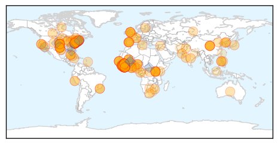

30 Day Trends
Web: 0 alerts, 0 warnings
Twitter: 0 alerts, 0 warnings
Top Articles:
- 1.000
- White House on Ebola preparation: 'Tremendous progress' as more hospitals equipped to handle virus
- 1.000
- New York hospital’s staff finish 21 days of monitoring after treating the city’s Ebola case
- 1.000
- 35 Facilities Designated for Ebola Treatment in U.S.
- 1.000
- Ebola in West Africa: WHO succeeds in isolation and safe burial of 70% of Ebola victims
- 1.000
- 1000 New Ebola Deaths in Just 2 Days in West Africa
- 1.000
- UN: Work remains on Ebola goals
- 1.000
- Can South Africa handle an ebola outbreak?
- 1.000
- CDC Approves New Ebola Treatment Centers
- 1.000
- WHO will miss Ebola targets it set for Dec 1
- 1.000
- Spain officially free of Ebola
- 1.000
- Possible Ebola patient admitted to Boston hospital for evaluation
- 1.000
- 35 U.S. hospitals designated as Ebola treatment centers
- 1.000
- 35 US Hospitals are Designated as Ebola Treatment Centers
- 1.000
- Ebola Response Update
- 1.000
- 13 Numbers That Show The Ebola Outbreak Is Far From Over
- 1.000
- Canada to send military health staff to Sierra Leone
- 1.000
- This Is How Much the U.S. Has Accomplished in Ebola Preparedness in Only Two Months
- 1.000
- WHO declares end of Ebola outbreak in Sierra Leone, but neighbor Guinea struggles to end virus
- 1.000
- Connecticut Hospitals Have Spent $5 Million to Prepare for Ebola
- 1.000
- The Ebola quarantine conundrum - let reason prevail: Christine Link (opinion)
- 1.000
- MSF pushes for more agile, hands-on approach to Ebola battle
- 1.000
- Ebola cases: Liberia in decline, Guinea stable, Sierra Leone increasing
- 1.000
- Fears of further Ebola spread as death toll climbs to 7,000
- 1.000
- Multiple Suspected Ebola Cases Surface In Pakistan
- 1.000
- Obama urges investment in Ebola response, vaccines
- 1.000
- Suspected case of Ebola emerges in Islamabad
- 1.000
- 35 hospitals selected as Ebola Treatment Centers in US with more to come
- 1.000
- Man cleared of Ebola suspicion at PIMS
- 1.000
- WHO: More than 17,000 people infected with Ebola
- 0.999
- Health-system resilience: reflections on the Ebola crisis in western Africa
- 0.999
- U.S. designates 35 hospitals to treat Ebola patients
- 0.999
- CDC: 35 hospitals can treat Ebola
- 0.999
- U.S. designates 35 hospitals as Ebola centers
- 0.999
- Spain officially free of Ebola: WHO
- 0.999
- Observer
- 0.999
- Massachusetts General Hospital Treating Possible Ebola Patient
- 0.999
- Targets being met against ‘stupid’ Ebola, claims WHO
- 0.999
- WHO congratulates Spain on ending Ebola transmission
- 0.999
- Mich. hospitals don’t make Ebola treatment center list
- 0.999
- General Health Systems Damaged by Ebola in West Africa
- 0.999
- Ebola infected passenger was sent home from ER
- 0.999
- Spain declared free of Ebola virus by WHO
- 0.999
- U.S. Designates 35 Hospitals Capable of Ebola Treatment
- 0.999
- General Health Systems Damaged by Ebola in West Africa
- 0.999
- Emory among 35 hospitals designated as Ebola centers
- 0.999
- Unnecessary panic: First Ebola suspect a false alarm
- 0.999
- White House claims progress in Ebola fight
- 0.999
- Targets being met against 'stupid' Ebola, claims WHO -
- 0.998
- Area hospitals, emergency workers train for Ebola
- 0.998
- Ebola Outbreak Response Now Mismatched With Needs
Showing top 50 articles...
Top Tweets:
- 0.875
- RT: @AfricaStopEbola Ebola: Sierra Leone la solidarité pour éradiquer le virus https://t.co/igAW96GZv6
- 0.854
- Ebola numbers update from: 17124 cases 6062 deaths. The outbreak is approaching a year old and is far from over.
- 0.781
- Liberia Guinée Sierra Leone : où en est la lutte contre Ebola ? http://t.co/YvuW6bbyrS
- 0.770
- RT: Useful MOOC for WestAfricans. Free & based on WHO advice - Understanding the Ebola Virus and How You Can Avoid It http://…
- 0.727
- RT: .@PopSci reports declared Nigeria Ebola free in October thanks to efforts in place to endpolio. Read more: http://t…
- 0.680
- AFD Blog `@CDCgov: Ebola Hospital Preparedness & Designated Ebola Treatment Centers' http://t.co/a16haqOBs6
- 0.666
- Pakistan: Suspected Ebola patient admitted to PIMS http://t.co/ycZ3XaEqZV Ebola
- 0.650
- Many Ebola cases don't get investigated in Sierra Leone because there's no point. http://t.co/ETt6Jr8Mcd
- 0.615
- Year in Risk 2014 http://t.co/WgzYcNaYnC Ebola outbreak among events that shaped 2014 EbolaResponse Ebola
- 0.615
- 83% of travelers coming from countries affected by Ebola live within 200 miles of U.S. Ebola treatment. http://t.co/VLcN2hu29W
- 0.545
- Tell us how you are helping victims and families of Ebola in West Africa. GivingTuesday GivingIsMyStyle ElbowOutEbola
- 0.534
- RT: Meet Milos a Serbian nurse at's Ebola Treatment Center in Sierra Leone. | https://t.co/iHLdV33rnp | via @…
Web/News Articles

Tweets

Article Locations
Article Confidences